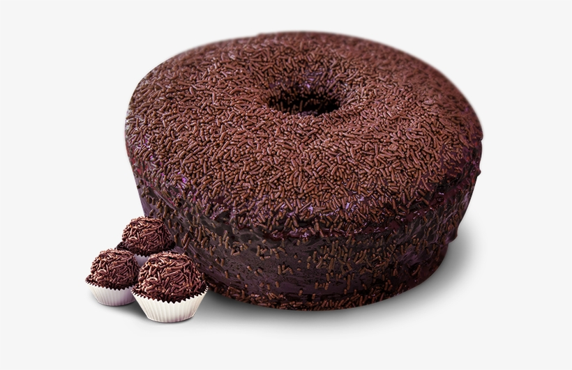

| Receita de Bolo | Ingredientes | Modo de Preparo | Imagem | ||||||
|---|---|---|---|---|---|---|---|---|---|
| Bolo de Brigadeiro |
Massa 5 claras de ovos, 5 gemas de ovos, 1 xícara de chá de açúcar, 1 xícara de chá de leite, Meia xícara de chá de chocolate em pó, 2 xícaras de chá de farinha de trigo, 1 colher de sopa de fermento químico em pó. Recheio e cobertura 2 latas de leite condensado, Meia xícara de chá de chocolate em pó, 2 colheres de sopa de manteiga. Montagem 30 mililitros de leite, 5 mililitros de rum, Chocolate granulado a gosto. |
Massa 1 - Bata 5 claras de ovos até o ponto de neve. Depois, adicione 5 gemas, 1 xícara de chá de açúcar, 1 xícara de chá de leite e bata mais um pouco. 2 - Em seguida, adicione meia xícara de chá de chocolate em pó, 2 xícaras de chá de farinha de trigo e 1 colher de sopa de fermento químico em pó peneirados. Misture para incorporar os ingredientes. 3 - Transfira a massa para uma formada untada com manteiga e chocolate em pó. Leve para assar a 180 graus Celsius por 45 minutos. Recheio e cobertura 1 - Em uma panela, coloque 2 latas de leite condensado, meia xícara de chá de chocolate em pó e 2 colheres de sopa de manteiga. Misture e cozinhe até soltar do fundo da panela. Montagem 1 - Em um recipiente, misture 30 mililitros de leite e 5 mililitros de rum. 2 - Divida o bolo em duas partes e umedeça a massa com a mistura de rum e leite. 3 - Espalhe o recheio e cubra com metade da massa. Cubra todo o bolo com o recheio e finalize com chocolate granulado. |
 | ||||||
| Bolo de Cenoura |
Massa 3 cenouras grandes lavadas e picadas (pode ser com casca), 2 xícaras de açúcar refinado não muito cheias, 1 xícara de óleo, 3 xícaras de farinha de trigo, 1 colher de sopa de fermento químico em pó. Cobertura 3 colheres de sopa de chocolate em pó, 1 e meia colher de sopa de açúcar refinado, 3 colheres de sopa de leite, chocolate granulado a gosto para decorar |
Massa 1 - No liquidificador, bata 3 cenouras grandes lavadas e picadas, 2 xícaras de açúcar refinado não muito cheias e 1 xícara de óleo. Depois, passe para uma tigela, colocar 3 xícaras de farinha de trigo. 2 - Por último, misture devagar uma colher de sopa de fermento em pó químico. 3 - Coloque a massa em um tabuleiro ou forma untada de manteiga e um tiquinho de farinha de trigo pra não grudar. Leve para assar em forno aquecido a 180 graus de 30 a 40 minutos. O tempo vai depender do forno. Cobertura 1 - Em uma panela, junte 3 colheres de sopa de chocolate em pó, 1 e meia colher de sopa de açúcar refinado e 3 colheres de sopa de leite. Leve ao fogo, mexendo bem sem parar até engrossar. 2 - Com a colher, observe se você vê o fundo da panela sem grudar tanto. E, se cai da colher, sem escorrer rápido, estará no ponto. Desligue o fogo. 3 - Dica: um truque é furar o bolo com garfo antes de colocar a calda em cima, para o chocolate penetrar no recheio. Decore com chocolate granulado a gosto se desejar. |
|||||||
| Para mais dicas; Acesse Aqui | |||||||||